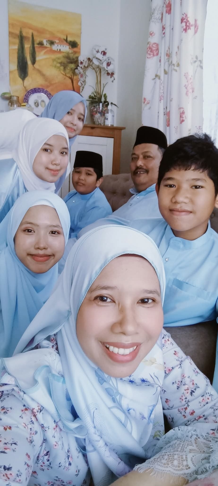

My Family
My happiness in life.
My Small Family Members
In my family, I have 5 siblings, 3 girls and 2 boys. The oldest one is a girl which born in 2002, the second one is also a girl that born in 2003 and then there are me which are the youngest sisters in my family, forth and fifth both are boys which born in 2010 and 2013.

Family selfie during Eid al-Fitr
My Family Members Background
My father works as a firefighter at Precint 7, Putrajaya. While,my mother work as a secretary at Ministry of Finance. Now, let's move to my siblings education journey. My oldest sister(kakyong), is currently pursuing her Bachelor Degree in Business Administration(Finance) at Universiti Kebangsaan Malaysia(UKM). Then, my second sister(kakyang), which currently in her intership semester at Ministry of Finance to finish her Bachelor Degree at International Islamic University Malaysia (IIUM). Now, as you guys know I am the third child, you guys must already know about me right? So, moved to the forth siblings(Fawwaz). He is a bit special in our family because he were diagnosed with dyslexic. As we all know, sometime he going to throw his tantrum, but Alhamdulillah we managed to handle his tantrum calmly and we realised that as he grow older, he able to control his own tantrum. Finally, the youngest brother(Adik). Right now, he is schooling at the SMKPP14(1), which are the same school like me and Fawwaz.

My mom and me
Next, I want to write about my lovely grandfather(Wan) and grandmother(Tok). I love them so much because they spend a lot of money, time and energy to support me in UiTM. They are staying at Kampung Bakar Sampah, Yan which takes 45 minutes to arrived to UiTM. However, they always ensure that I have an enough money to survive in college, sometimes they will come to college just to visit and send me food. I really appreciate it. Other than that, almost every week they will come to fetch and bring me home just to spend our weekend together.

Me with Tok and Wan during Eid Al Adha
Best viewed in Chrome, 1920x1080 resolution. Last updated: May 2026.